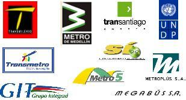

|  |
Transmilenio
– Bogota (1998-2001)
Transmilenio
Fase II – Bogota (2003)
Transmilenio
Fase III – Bogota (2007)
Transantiago
– Chile (2003-2004)
SITM del
Valle de Aburrá – Medellín
(2006-2007)
Megabus
– Pereira (2002-2003)
TransMetro
– Barranquilla (2005)
MIO
– Cali (2006- 2007)
Transporte
Masivo de Managua – Nicaragua (2005)
Metrolínea –
Bucaramanga (2007) |